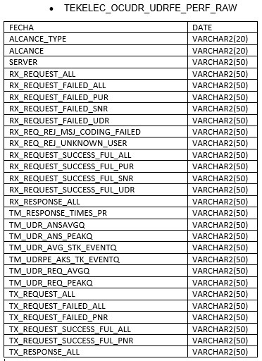
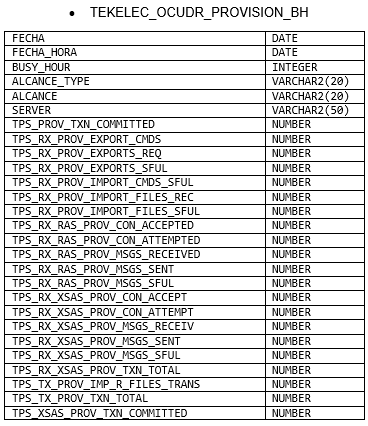
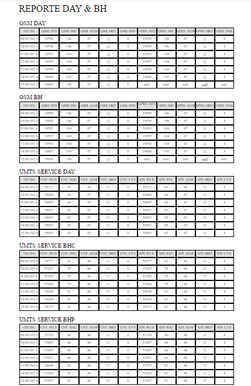
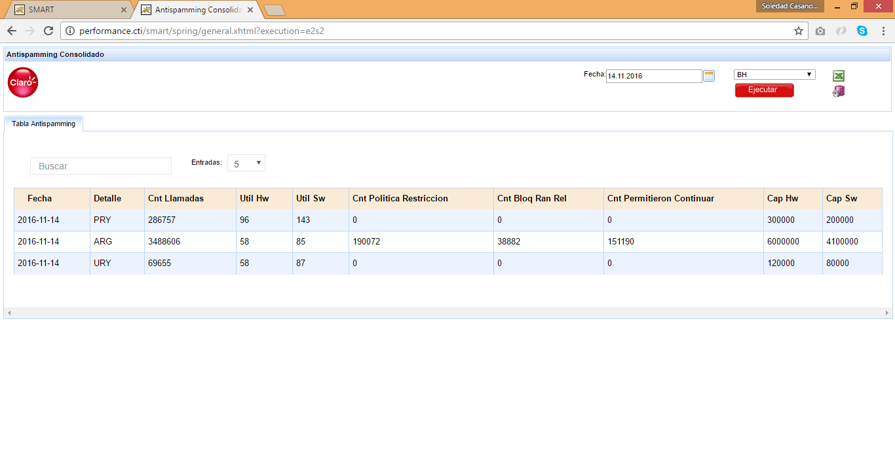
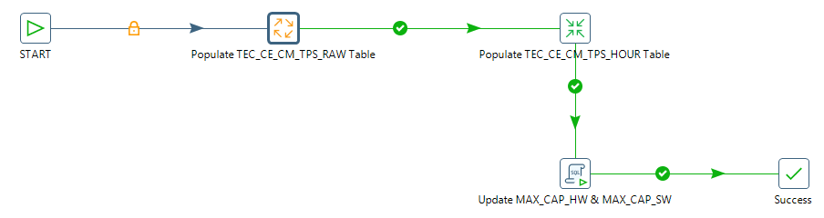
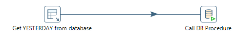

WAP ZTE¶
1. OBJETIVO¶
El presente documento buscar explicar y detallar el proceso que genera el WAP ZTE.
2. ALCANCE¶
Áreas involucradas: Performance de Red
3. DEFINICIONES¶
- Cortado: Servidor LINUX en donde se importan los CSV desde el proveedor.
El nombre es cortado.claro.amx y la dirección IP física es 10.105.146.8
4. DESCRIPCION GENERAL¶
La plataforma WAP ZTE es un internet Gateway que permite a los teléfonos que no son smart phones la posibilidad de navegar en internet. No sólo funciona como proxy, sino también como adaptador de contenido, y en casos donde se visita una página web que tiene imágenes en alta definición, le baja la resolución para que el viejo teléfono lo pueda mostrar”.
Campos de la tabla WAP_GATEWAY_KPI_ZTE_AUX:

Campos de la tabla WAP_GATEWAY_KPI_ZTE_RAW:

Campos de la tabla WAP_GATEWAY_SERVICE_ZTE_AUX:

Campos de la tabla WAP_GATEWAY_SERVICE_ZTE_BH:

Campos de la tabla WAP_GATEWAY_SERVICE_ZTE_DAY:

Campos de la tabla WAP_GATEWAY_SERVICE_ZTE_IBHW:

Campos de la tabla WAP_GATEWAY_SERVICE_ZTE_RAW:
5. MACRO FLUJO DEL PROCESO¶
6. DESCRIPCION DETALLADA¶
6.1. Datos Origen¶
Server Origen y Path: 10.105.146.8 - /home/ztearchive/wapgw
Cantidad de archivos origen: 2 archivos
- 1.03 Daily WAP Gateway Kpi Report
- 1.04 Daily Service Gateway Real-Time Report
Frecuencia actualización: Frecuencia diaria
Tipo de Archivo: csv
6.2. Datos Destino¶
- Server Destino: Cortado
- Conversión de Archivos: No
- Tabla Files: Si
- Tabla Auxiliar: Si
- Frecuencia de corrida del proceso: 1 vez al día
- Regionales: No
- RAW Si/No: Si
- Hour Si/No: Si
- Day Si/No: Si
- BH Si/No: Si
- Países: No
- Directorio Destino (File System): /home/calidad/WapZte/wapgw
6.3. Shell Copiar Archivos Origen a Destino y limpieza de los mismos¶
Los Scripts tienen las siguientes funciones:
1- Copiar los archivos
2- Limpieza
3- Ejecutar Pentaho
El Script wapZteDiario.sh es la raíz de proceso
Los scripts son los siguientes:
6.4. Listado de Tablas Utilizadas¶
Campos de la tabla FILE:

Las tablas utilizadas son las siguientes:
6.5. Pentaho¶
Estructura del proyecto:
- Proceso Pentaho End to End
Tenemos el Shell wapZteDiario.sh que trae datos para el servidor Cortado. Luego setea variables de entorno, directorios donde se encuentran los datos para procesar los archivos disponibles.
En la Carpeta File se encuentran todos los archivos a procesar.
Los archivos a procesar dependen del status en que se encuentran:
- 0: Se procesó correctamente
- 1: Se procesó pero tuvo error
- 5: Para procesar
- Pentaho Inserción tabla Files
Get WAPZTE File Names: se encarga de buscar los archivos del sistema operativo y los envía a Populate FILES table para escribirlos en la tabla File. Escribe los siguientes datos:

- Nombre del archivo
- Status
- Pentaho Inserción tabla auxiliar / raw / hour (No contiene hour)
Tabla auxiliar de la tabla WAP_GATEWAY_KPI_ZTE
Tabla auxiliar de la tabla WAP_GATEWAY_SERVICE_ZTE_AUX
- Pentaho Calculo Sumarizaciones
Las sumarizaciones se calculan a día vencido (el día anterior al actual), para dicho cálculo se debe llamar al procedimiento Call P_CALCULAR_SUMARIZACIONES_ZTE DB Procedures.
6.6. Controles¶
7. REPROCESO MANUAL¶
- Procedimiento de reproceso manual paso a paso:
Se debe ejecutar el script ScpWapZteDate.sh, el cual debe recibir por parámetro la Fecha solicitada, para realizar la limpieza, para luego ejecutar el ImportRework.kjb en Pentaho de manera manual.
Ubicación de los scripts en la carpeta /home/calidad/WapZte/Scripts
Ubicación del Rework de ejecución en Pentaho: /home/calidad/WapZte/Rework
El Formato de la fecha es el siguiente:
- YYYYMMDD
Por consola se utiliza de la siguiente manera:
- ./Pentaho61/data-integration/kitchen.sh -file=/home/calidad/WapZte/Rework.kjb –param:FECHA_PROC= YYYYMMDD